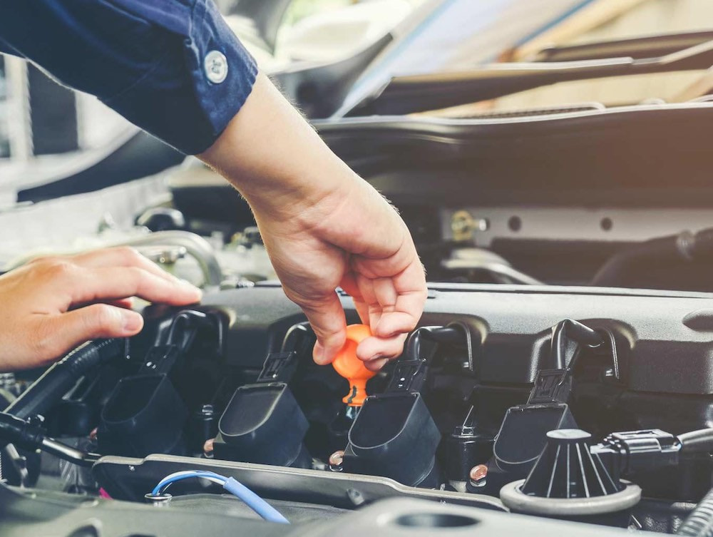

ARLO on kaasaegne mitme profiiliga autoremonditöökoda Tallinnas. Me pakume igat liiki sõiduautode remondi- ja muid teenuseid ning järgime põhimõtteid, mis ühtivad suurte edasimüüjate klientide ootustega: peame kinni sõiduki parandamise lubatud tähtaegadest, tuvastame kiiresti rikked, kasutame kvaliteetseid seadmeid ja kulumaterjale, säilitame teie sõiduki teenindusajaloo, tuletame meelde järjekordse külastuse vajadusest ning anname kõikidele töödele garantii.

ARLOs on olemas kõik, mida on vaja teie sõiduauto diagnostikaks, paranduseks ja hoolduseks. Oma töös kasutame ainult tänapäevaseid seadmeid, kvaliteetseid kulumaterjale ja usaldusväärsete tootjate varuosi (originaale ja kvaliteetseid kontrollitud analooge).

Meil töötavad kogenud meistrid, kes on spetsialiseerunud konkreetsetele automarkidele ja haruldastele riketele. Iga päev parandatakse CARVEXis erinevaid sõiduautode mudeleid ja marke nii suurettevõtete kui ka eraklientide jaoks. Oleme harjunud töötama operatiivselt ja kvaliteetselt, oskame oma aega ja koormust kavandada, tuvastame kiiresti vajalikud tööd ning järgime täpselt tootja soovitatud tehnoloogiaprotsesse.
